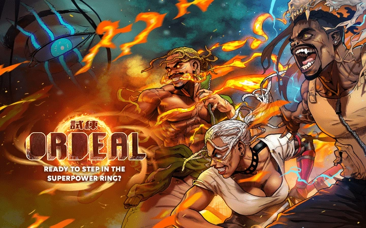
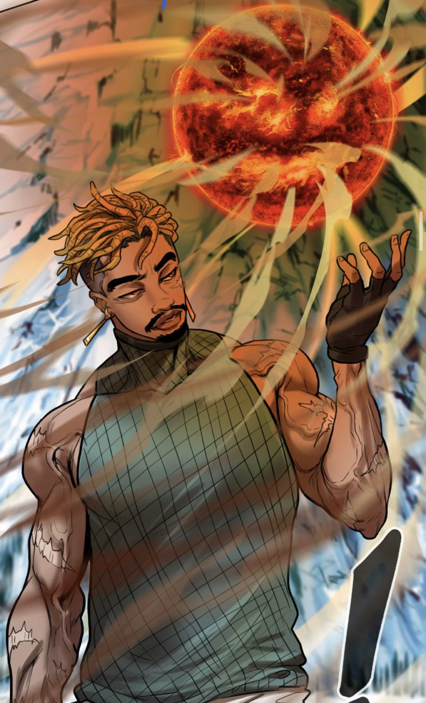
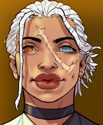
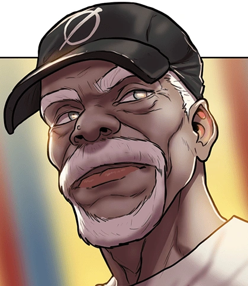
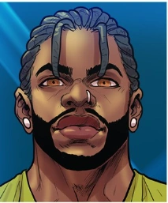

are humans with supernatural powers. Che Heart, a human-turned-kimyo, is now responsible for the world's future.

Meet the some of the Crew!

Che Heart, series protagonist. A human turned Kimyo, current bearer of the Ilios talent.

Granddaughter to Leo Thomas. Sits amongst the strongest 50 Kimyos to currently exist.

One of the greatest Kimyos to ever live while bearing the Ilios talent. Che and the gangs esteemed mentor.

A student of Leo Thomas alongside Che, capable of 3 Hide Talents; Tevin is a powerful friend and ally.
"If you survive this, you are indeed a child of promise. A Great Power was taken from you, but God will grant you a new one. Therefore your name shall be called....Che"